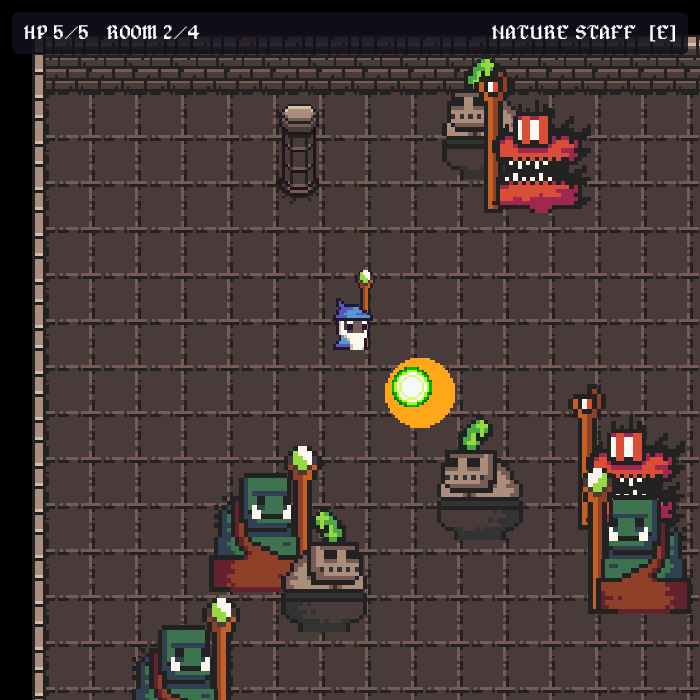
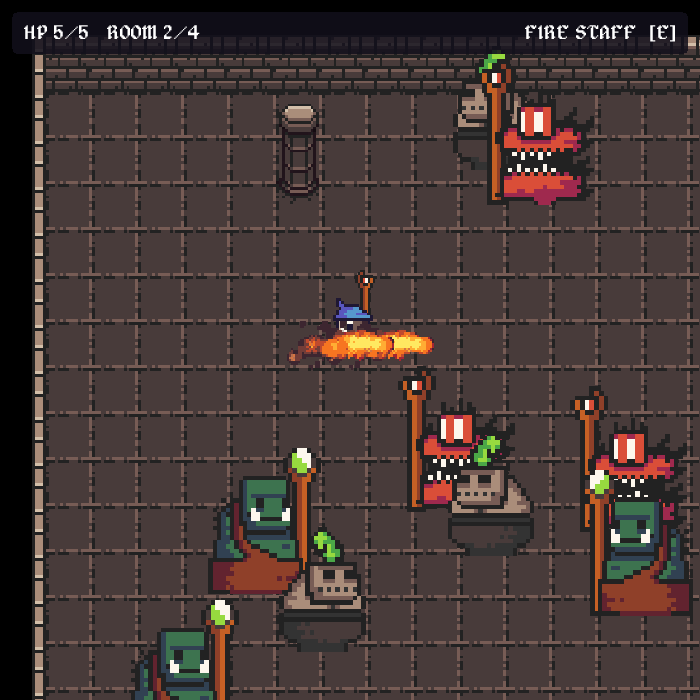
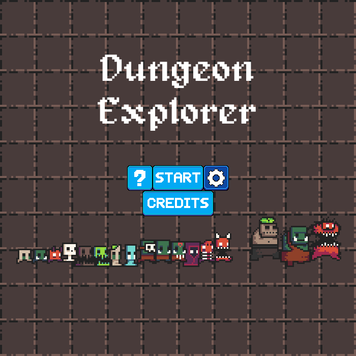

Pick your staff.
Throw a streak of fire or send a green nature orb through the room. Swap spells on the fly and watch the impact effects unfold.
FIRE + NATUREA PERSONAL GAME PROJECT · 2018–2019
Two staffs. Four rooms.
A dungeon full of trouble.
A little wizard, some very big monsters, and just enough magic to get by. A pixel-art dungeon shooter built from scratch in Processing and Java.
DESKTOP PROTOTYPE · PROCESSING / JAVA

SMALL WORLD. BIG PERSONALITY.
Chasing monsters, flying spells, and a world made one tile at a time.
Throw a streak of fire or send a green nature orb through the room. Swap spells on the fly and watch the impact effects unfold.
FIRE + NATUREDemons and ogres chase you down and cast back. Faster zombies close the distance. Your five health points won't last forever.
THREE ENEMY TYPESExplore two arenas and two authored maps, with Box2D collisions and sprites layered around the dungeon's walls and columns.
FOUR ROOMS

Actual frames from the running game. See the original development recordings ↗
BEHIND THE PIXELS
Created by Winston Liu, Dungeon Explorer brings a 2D world to life through sprite animation, physics, enemy behavior, projectiles, sound, and menus, all connected in a Processing sketch.
It's a combat prototype, with room switching by shortcut and wonderfully unbalanced staffs. There’s no save system or campaign yet—just the core of a dungeon adventure.
YOUR TURN
Run the game on your desktop with Processing. This page is the field guide.
Install Processing and use Java mode. Tested on Apple silicon macOS with Processing 4.3 and 4.5.6.
Install ControlP5 2.2.6, Box2D for Processing 0.4, and Minim 2.2.2 in your sketchbook.
Download the source, name the folder DungeonExplorer, open DungeonExplorer.pde, and hit Run.
R Restart after defeat · B Show collision outlines · P Save a screenshot
Toggle music from the title screen's gear button. The repository includes regression checks and a repeatable screenshot capture script.
Development instructions ↗{kind=link}
{kind=link}